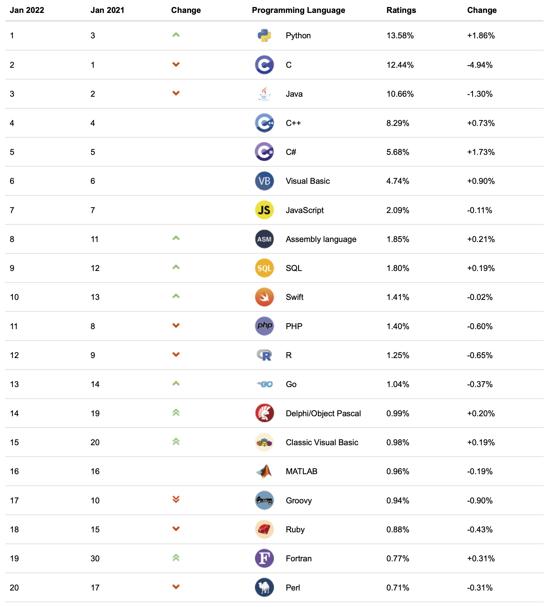
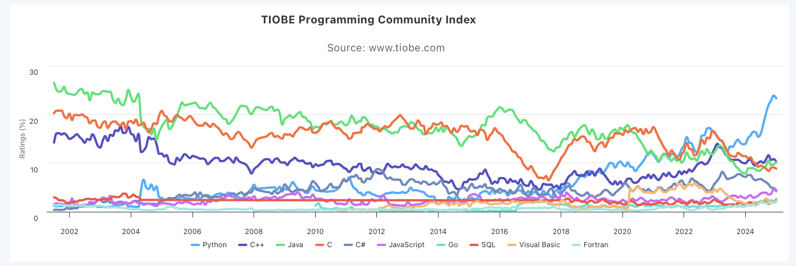

Tema 1: Historia y conceptos de los lenguajes de programación¶
Historia de los lenguajes de programación¶
De las máquinas de calcular a los computadores programables¶
 |
  |
| Máquina de Schickard (1623) | Calculadora de Pascal (1650) |
Desde las primeras calculadoras mecánicas diseñadas en el siglo XVII hasta los años 40 del siglo pasado se han inventado multitud de máquinas y computadores mecánicos, analógicos o electrónicos que han intentado acelerar y mejorar la precisión de los cálculos.
El punto culminante de todos los enfoques mecánicos para realizar cálculos fue el famoso Motor Analítico diseñado por Charles Babbage en 1840. La diferencia fundamental con todos los artefactos anteriores es que se trataba de una máquina de calcular programable mediante tarjetas perforadas (Babbage se inspiró en el telar de Jackquard en el que el diseño de los dibujos de las telas se podían configurar usando tarjetas perforadas). La máquina estaba diseñada para trabajar en base 10 y se podía conseguir que sus cálculos realizaran saltos condicionales y bucles.
Babbage trabajó durante más de 30 años para intentar construir la máquina. Tenía una enorme complejidad para la época y necesitaba muchísima financiación. En 1871 murió habiendo podido construir sólo una parte.

La matemática Ada Lovelace tuvo un papel fundamental en la divulgación de la máquina, de sus sistema de programación y fue la primera que entendió sus posibilidades más allá del cálculo de fórmulas.
De forma poco habitual para la época, Ada fue educada en el campo de las ciencias y de las matemáticas. A principios de 1840, con veinticico años, conoció el trabajo de Babbage y colaboró con él, dedicándose durante varios años a conocer y estudiar el diseño y el funcionamiento del motor analítico.
En 1843 publicó el trabajo "Sketch of the analytical engine invented by Charles Babbage" en el que describe el Motor Analítico, añade reflexiones propias sobre el alcance del invento y construye un ejemplo completo, con tablas y diagramas, de cómo hacer que la máquina produzca la secuencia de los números de Bernoulli. Se puede considerar estas tablas y diagramas como el primer programa de un computador.

Antes de que existiera ningún computador real, en 1936, el matemático inglés Alan Turing formalizó la idea abstracta de computador, utilizando un modelo muy sencillo de procesamiento: una máquina abstracta con un scanner que lee y escribe 0s y 1s de una cinta infinita (memoria) y se mueve y los escribe en función de una tabla definida en la máquina (programa). Con esta máquina abstracta (Máquina de Turing) Turing explora la idea de lo computable y lo no computable. ¿Existen problemas no computables para los que no es posible inventar un algoritmo que los resuelva? Turing demuestra que sí y establece con su trabajo los límites de la computación.
En el mismo trabajo Turing define el concepto de máquina universal que es capaz de leer de la cinta un programa cualquiera y simular su comportamiento en otra parte de la cinta. Esta idea tuvo un profundo impacto en el desarrollo de los computadores, porque mostraba que es posible escribir programas que tomen como datos otros programas. Esto abre la puerta a la idea de los programas almacenados en memoria (ya que son otros datos más) y a la creación de compiladores e intérpretes.
En la década de 1940 hubo una explosión de máquinas de computación electrónicas y electromecánicas. Fue una década prodigiosa en la que se desarrollaron tecnologías cada vez más rápidas y resistentes, y se consiguieron enormes avances en la velocidad y precisión de los cálculos.

Pero no fue hasta 1945 cuando John Von Neumann, que trabajaba en la construcción del ENIAC, propuso su famosa arquitectura en la que por primera vez se introducen las dos ideas claves de los computadores de propósito general: el programa almacenado en memoria y un conjunto de instrucciones de procesamiento que incluye el direccionamiento indirecto.
Y en 1948, tres años después, se construyó en la universidad de Manchester el primer computador electrónico digital de propósito general que utilizaba esta arquitectura (llamado Baby). Fue diseñado por Max Newmann usando la tecnología proporcionada por los ingenieros F.C. Williams y Tom Kilburn. Williams había inventado un dispositivo de memoria electrónico (la válvula de Williams) capaz de sustituir las lentas líneas de retardo de mercurio utilizadas hasta ese momento.

La máquina de Manchester fue el primer computador con un conjunto de instrucciones completo, capaz de realizar saltos, condicionales y direccionamiento indirecto. La primera ejecución de un programa fue el 21 de junio de 1948. En esa fecha Alan Turing se incorporó a la universidad de Manchester, como director del Laboratorio de Computación. Tres años después, con un diseño ampliado en el que también influyó Turing, una versión mucho mayor de la máquina se convirtió en el primer computador disponible comercialmente, el Ferranti Mark I. El primero se instaló en la universidad de Manchester en febrero de 1951, un mes antes que el UNIVAC I fuera entregado al Departamento de Censo de los EEUU. Se vendieron otras 10 máquinas a Gran Bretaña, Canadá, Holanda e Italia.
El primer programa complejo de Inteligencia Artificial, un jugador de damas escrito por Christopher Strachey, se ejecutó en el verano de 1952 en el Ferranti Mark I en el Laboratorio de Computación de Manchester. Strachey escribió el programa animado por Turing y usando el manual de programación del Ferranti que Turing acababa de escribir. Turing participó también en el desarrollo de otros programas de IA, como un jugador de ajedrez basado en heurísticas.
Los primeros lenguajes de programación¶
Los primeros computadores electrónicos se programan directamente usando el conjunto de instrucciones del procesador, en código máquina, código hexadecimal
El primer lenguaje de un nivel algo más elevado que el código máquina es el ensamblador. Programas que empiezan a ayudar a los programadores: ensambladores. Hay una relación casi directa entre la notación en ensamblador y el código hexadecimal que produce el ensamblador.
A finales de la década de los 40 se empiezan a intentar resolver con los primeros computadores los primeros problemas matemáticos distintos de operaciones numéricas: codificación y descodificación, problemas combinatorios como el coloreado del mapa o problemas de ordenación.
Uno de los primeros algoritmos de von Neumann realiza una ordenación de un conjunto de números. Von Neumann lo describe en una carta fechada en 1945. Utiliza el conjunto de instrucciones del EDSAC cuando todavía no se había construido. El programa fue estudiado por Donald Knuth en el artículo Von Neumann's first Computer Program, en donde documenta que había un bug en las primeras instrucciones. Es el primer bug escrito del que se tiene historia. Si Von Neumann hubiera podido ejecutar el programa en el EDSAC se hubiera dado cuenta del error y hubiera sido la primera depuración de un programa.

Primer programa de Von Neumann
(Donald Knuth, "Von Neumann's first Computer Program", Journal of the ACM Computing Surveys (CSUR) Surveys, Volume 2 Issue 4, Dec. 1970, Pages 247-260)
El nacimiento de los computadores comerciales¶
El UNIVAC fue el primer computador comercial (1951). Con este computadora aparece por primera vez la figura del programador: manuales, cursos de formación, ofertas de empleo, etc.

UNIVAC

Instalaciones comerciales del UNIVAC
Manual de programación del UNIVAC (1959)
Los computadores son lentos y muy complicados de instalar y mantener.
Son más importantes las horas de funcionamiento del computador que las horas de trabajo del programador.
La complejidad de las tareas a programar es pequeña y es suficiente con los programas en ensamblador.
El manual de 1959 de programación del UNIVAC es una referencia histórica de gran interés de la que hemos extraído las siguientes imágenes:

Manual del UNIVAC
 Programación del UNIVAC
Programación del UNIVAC
 Algoritmo UNIVAC
Algoritmo UNIVAC
 Codigo UNIVAC
Codigo UNIVAC
Se realizan los primeros anuncios y reportajes de televisión sobre computadores (YouTube)

Anuncio UNIVAC
IBM 704
El IBM 704 fue el otro gran ordenador comercial de la década de los 50.
Tuvo una difusión mucho mayor que el UNIVAC: centros gubernamentales, universidades.
Los primeros lenguajes de programación de alto nivel se desarrollan para este computador.

Foto IBM 704
Programando los primeros computadores
The UNIVAC I was an interesting machine to program, with its mercury delay line storage and its short mean time to failure. Programs were entered into the computer by typing them onto steel magnetic tape, a major innovation at that time.
Working with the IBM 704 at NYU was an entirely different experience from the UNIVAC I. It was built for executing scientific applications, and had as its major innovation a magnetic core memory, replacing the Williams tube memory of the IBM 701 and the primary memory drum of the IBM 650. It also had a floating point arithmetic unit and index registers to form effective addresses, both of which were significant advances at that time. The machine had the equivalent of 128 KB primary memory, 32 KB of secondary drum memory and magnetic tapes that held 5 MB of data. It operated at 0.04 MIPS, and cost $3 million dollars in 1957, the equivalent of perhaps $20 million today.
George Sadowsky, My Second Computer was a UNIVAC I
Los primeros lenguajes de alto nivel¶
Los primeros lenguajes de alto nivel se desarrollaron a finales de la década de los 50:
- FORTRAN en 1956
- Lisp en 1958
Ambos lenguajes planteaban dos enfoques muy distintos desde el principio:
- FORTRAN
- Primer lenguaje comercial, equipo de IBM dirigido por John W. Backus
- Lenguaje imperativo: estado, estructuras de control, contador de programa, celdas de memoria
- Lenguaje compilado
- Lisp
- Lenguaje diseñado en un departamento de investigación, un equipo del MIT dirigido por John McCarthy
- Lenguaje funcional: funciones, recursión, listas, símbolos
- Lenguaje interpretado
FORTRAN
Desarrollado por IBM para programar el IBM 704. Algunos datos:
- Su nombre proviene de FORmula TRANslating system.
- El primer manual de FORTRAN se imprime en octubre de 1956 para el IBM 704.
- El primer compilador se comercializa en abril de 1956.
Cita de John Backus (Wikipedia sobre FORTRAN):
Much of my work has come from being lazy. I didn't like writing programs, and so, when I was working on the IBM 701, writing programs for computing missile trajectories, I started work on a programming system to make it easier to write programs.

John Backus

Ejemplo FORTRAN
Tomado del manual de FORTRAN del IBM 704
Lisp
El otro lenguaje de alto nivel desarrollado en esa época es el Lisp. Desarrollado a finales de los 50 en el MIT por John McCarthy.
Aunque históricamente el nombre del lenguaje se solía escribir con letras mayúsculas (LISP), posteriormente se ha popularizado el uso de la mayúscula sólo para la primera letra (Lisp). Esta forma es más fiel al origen del nombre del lenguaje. Lisp no es un acrónimo, sino la contracción de la expresión List Processing. El procesamiento de listas es una de las características principales del Lisp.
McCarthy explica en un artículo de 1979 la historia inicial del Lisp:
[...] My desire for an algebraic list processing language for artificial intelligence work on the IBM 704 computer arose in the summer of 1956 during the Dartmouth Summer Research Project on Artificial Intelligence which was the first organized study of AI. [...]
[...] There were two motivations for developing a language for the IBM 704. First, IBM was generously establishing a New England Computation Center at M.I.T. which Dartmouth would use. Second, IBM was undertaking to develop a program for proving theorems in plane geometry (based on an idea of Marvin Minsky's), and I was to serve as a consultant to that project. At the time, IBM looked like a good bet to pursue artificial intelligence research vigorously, and further projects were expected. It was not then clear whether IBM's FORTRAN project would lead to a language within which list processing could conveniently be carried out or whether a new language would be required.[...]
[...] I invented conditional expressions in connection with a set of chess legal move routines I wrote in FORTRAN for the IBM 704 at M.I.T. during 1957-58. This program did not use list processing. The IF statement provided in FORTRAN 1 and FORTRAN 2 was very awkward to use, and it was natural to invent a function XIF(M,N1,N2) whose value was N1 or N2 according to whether the expression M was zero or not. The function shortened many programs and made them easier to understand, but it had to be used sparingly, because all three arguments had to be evaluated before XIF was entered, since XIF was called as an ordinary FORTRAN function though written in machine language. This led to the invention of the true conditional expression which evaluates only one of N1 and N2 according to whether M is true or false and to a desire for a programming language that would allow its use.[...]
John McCarthy, History of LISP

John McCarthy
Uno de los primeros manuales de Lisp publicados es el manual de LISP de 1960 para el IBM 704 escrito por Phyllis A. Fox. del grupo de investigación del MIT dirigido por McCarthy.
Un ejemplo de código Lisp:

Ejemplo LISP
Tomado de "The Programming Language LISP", MIT Press, 1964
La explosión de los lenguajes de programación¶
Desde 1954 hasta la actualidad se han documentado más de 2.500 (consultar en The Language List). Entre 1952 y 1972 alrededor de 200 lenguajes. Una decena fueron realmente siginificativos y tuvieron influencia en el desarrollo de lenguajes posteriores.
Genealogía de los lenguajes de programación

Genealogía de los LP
Algunas notas sobre la genealogía:
-
APL es un lenguaje algebraico declarativo de especificación de funciones y circuitos lógicos. Su carácter declarativo ha tenido influencia en lenguajes como Prolog o Haskell.
-
Lisp no sólo es un lenguaje funcional, sino que también es el primer lenguaje interpretado, con muchas características de tiempo de ejecución y poco chequeo estático. En esos aspectos ha influido en lenguajes dinámicos no funcionales como Python o Smalltalk. Lenguajes como Smalltalk o Objective-C también heredan de Lisp algunas características funcionales como la posibilidad de usar un bloque de código como un objeto primitivo que se crea en tiempo de ejecución y que se puede asignar o pasar como parámetro. Es lo que se denomina clausura en el paradigma de programación funcional.
-
SIMULA es el primer lenguaje que define conceptos como clase u objeto. Es el origen de la programación orientada a objetos estática y fuertemente tipeada. Lenguajes como C++, Eiffel, o Java toman esta idea. Frente a esta tendencia se encuentra otra visión de la programación orientada a objetos de lenguajes como Smalltalk u Objective-C en la que se enfatiza más aspectos dinámicos como el paso de mensajes o la modificación de clases en tiempo de ejecución.
Algunos lenguajes importantes y su fecha de creación
| 1950-1960 | 1970 | 1980 | 1990 | 2000 |
|---|---|---|---|---|
| 1957 FORTRAN | 1970 Pascal | 1980 Smalltalk-80 | 1990 Haskell | 2000 C# |
| 1958 ALGOL | 1972 Prolog | 1983 Objective-C | 1991 Python | 2003 Scala |
| 1960 Lisp | 1972 C | 1983 Ada | 1993 Ruby | 2003 Groovy |
| 1960 COBOL | 1975 Scheme | 1986 C++ | 1995 Java | 2009 Go |
| 1962 APL | 1975 Modula | 1986 Eiffel | 2014 Swift | |
| 1964 BASIC | 1987 Perl | |||
| 1967 SIMULA |
Aspectos que provocan la evolución de los LP
¿Por qué hay tanta variedad en los lenguajes de programación? Hay muchos aspectos que fomentan esta variedad y que provocan la necesidad de nuevos lenguajes:
- Nuevos recursos y tipos de ordenadores
- Nuevas aplicaciones y necesidades de los usuarios
- Nuevos métodos de programación
- Descubrimientos en estudios teóricos
- Necesidad de estandarización
La siguiente tabla (extraída del libro Programming Languages. Design and Implementation, de Terrence W. Pratt y Marvin V. Zelkowitz) muestra una pequeña lista de los lenguajes y las influencias que fueron importante a finales del siglo 20.

Evolución de los lenguajes
Los creadores de los LPs
Si comprobamos la historia de los lenguajes de programación, podemos clasificar a sus creadores en tres grandes categorías:
- Investigadores trabajando en empresas (Backus, IBM-FORTRAN, Gosling, Sun-Java)
- Investigadores en universidades y departamentos de Informática (McCarthy, MIT-Lisp, Wirth, ETH-Pascal, Odersky, EHT-Scala)
- Desarrolladores open source que distribuyen su trabajo a la comunidad (Wall, Perl, Matsumoto, Ruby)
Lenguajes de programación en la actualidad¶
El índice TIOBE es un indicador de la popularidad de los lenguajes de programación. El índice se actualiza una vez al mes. Las puntaciones se basan en estadísticas no reveladas que incluyen el número de ingenieros en todo el mundo, cursos y aplicaciones desarrolladas. También se utilizan resultados obtenidos en los motores de búsqueda más usados.
El índice TIOBE no trata de medir el número de líneas escritas en los lenguajes de programación sino su popularidad e importancia en la comunidad.

Lista TIOBE
También es muy interesante comprobar la evolución de los 10 lenguajes más populares en los últimos 10 años.

Evolución TIOBE
La evolución no se detiene
Es interesante comprobar que cada vez es más fácil desarrollar nuevos lenguajes de programación. Las técnicas y herramientas de procesamiento de lenguajes se han popularizado cada vez más y son accesibles a mayor número de personas. Los lenguajes ya no sólo se crean en departamentos con un gran número de investigadores, sino también en comunidades open source formadas por voluntarios interesados y motivados
Ejemplos de nuevos lenguajes y sus creadores:
Ruby

Yukihiro Matsumoto
- Ruby (Wikipedia), un lenguaje de programación ideado en 1993 por el desarrollador japonés Yukihiro Matsumoto
- Lenguaje multi-paradigma interpretado y muy expresivo que actualmente se utiliza tanto para desarrollar aplicaciones web como videojuegos.
- Proyecto vivo, cada año aparecen nuevas versiones
Scala

Martin Odersky
- Scala (Wikipedia), diseñado en 2003 por el profesor alemán Martin Odersky
- Respuesta a los problemas de los lenguajes tradicionales imperativos para manejar la concurrencia
- Está implementado sobre Java y corre en la Máquina Virtual Java
Go

Ken Thompson
- Go (Wikipedia), el nuevo lenguaje de programación de Google lanzado en 2009
- Desarrollado, entre otros, por Ken Thompson, uno de los padres del UNIX
- Una mezcla de C y Python que intenta conseguir un lenguaje de programación de sistemas muy eficiente, expresivo y también multiparadigma.
Swift

Chris Lattner
- Swift (Wikipedia), el nuevo lenguaje de programación de Apple lanzado en 2014
- Proyecto open source en el que se puede observar su evolución y roadmap futuro
- Desarrollado, entre otros, por Chris Lattner, autor del sistema LLVM Compiler Infrastructure, conjunto de compilador, depurador, optimizador, etc. de código C, C++ y Objective-C.
- Lenguaje moderno, multiparadigma (programación orientada a objetos y funcional) fuertemente tipeado y compilado.
Elementos de los lenguajes de programación¶
Definición de la Encyclopedia of Computer Science¶
A programming language is a set of characters, rules for combining them, and rules specifying their effects when executed by a computer, which have the following four characteristics:
- It requires no knowledge of machine code on the part of the user
- It has machine independence
- Is translated into machine language
- Employs a notation that is closer to that of the specific problem being solved than is machine code
Definición de Abelson y Sussman¶
We are about to study the idea of a computational process. Computational processes are abstract beings that inhabit computers. As they evolve, processes manipulate other abstract things called data. The evolution of a process is directed by a pattern of rules called a program. […] The programs we use to conjure processes are like a sorcerer's spells. They are carefully composed from symbolic expressions in arcane and esoteric programming languages that prescribe the tasks we want our processes to perform.
Y otra idea fundamental
A powerful programming language is more than just a means for instructing a computer to perform tasks. The language also serves as a framework within which we organize our ideas about processes. Thus, when we describe a language, we should pay particular attention to the means that the language provides for combining simple ideas to form more complex ideas.
Características de un LP¶
- Define un proceso que se ejecuta en un computador
- Es de alto nivel, cercano a los problemas que se quieren resolver (abstracción)
- Permite construir nuevas abstracciones que se adapten al dominio que se programa
Elementos de un LP¶
Para Abelson y Sussman, todos los lenguajes de progamación permiten combinar ideas simples en ideas más complejas mediante los siguientes tres mecanismos
- Expresiones primitivas que representan las entidades más simples del lenguaje
- Mecanismos de combinación con los que se construyen elementos compuestos a partir de elementos más simples
- Mecanismos de abstracción con los que dar nombre a los elementos compuestos y manipularlos como unidades
Sintaxis y semántica¶
Sintaxis: un conjunto de reglas que definen qué expresiones de texto son correctas. Por ejemplo, en C todas las sentencias deben terminar en ';'
Los lenguajes de programación se ejecutan en un computador y tienen una determinada semántica que define cuál será el resultado de la ejecución de un programa.
Los lenguajes son para las personas¶
Los lenguajes de programación deben ser precisos, deben poder traducirse sin ambigüedad en lenguaje máquina para que sean ejecutados por computadores. Pero deben ser utilizados (leídos, comentados, probados, etc.) por personas.
La programación es una actividad colaborativa y debe basarse en la comunicación.
Importancia del aprendizaje de técnicas de LPs¶
Es importante conocer cómo funciona "por dentro" un lenguaje de programación y sus características comparadas.
- Mejora el uso del lenguaje de programación
- Incrementa el vocabulario de los elementos de programación
- Permite una mejor elección del lenguaje de programación
- Mejora la habilidad para desarrollar programas efectivos y eficientes
- Facilita el aprendizaje de un nuevo lenguaje de programación
- Facilita el diseño de nuevos lenguajes de programación
Abstracción¶
Una misión fundamental de los lenguajes de programación es proporcionar herramientas que sirvan para construir estas abstracciones. Cuando definimos una abstracción le damos un nombre a una entidad del lenguaje (una variable, una función, una clase, etc.).
Escoger un buen nombre para los elementos que vamos construyendo en nuestro programas es fundamental para conseguir un código legible y reutilizable.
Modelar como una actividad fundamental¶
- Para escribir un programa que preste unos servicios es fundamental modelar el dominio sobre el que va a trabajar
- Es necesario definir distintas abstracciones (tanto APIs, como datos) que nos permitan tratar sus elementos y comunicarnos correctamente con los usuarios que van a utilizar el programa.
- Las abstracciones que vamos construyendo van apoyándose unas en otras y permiten hacer compresible y comunicable un problema complejo
- Ejemplo: el modelado del funcionamiento de una biblioteca contiene abstracciones como "libros", "préstamo", "reserva", o "libros disponibles" que representan conceptos del dominio que deben ser implementados en nuestra solución

Casos de uso biblioteca
Abstracciones computacionales¶
Existen abstracciones propias de la informática (computer science), que se utilizan en múltiples dominios. Por ejemplo, abstracciones de datos como:
- Listas
- Árboles
- Grafos
- Tablas hash
También existen abstracciones que nos permiten tratar con dispositivos y ordenadores externos:
- Fichero
- Raster gráfico
- Protocolo TCP/IP
Construcción de abstracciones¶
Uno de los trabajos principales de un informático es la construcción de abstracciones que permitan ahorrar tiempo y esfuerzo a la hora de tratar con la complejidad del mundo real.
Cita de Joel Spolsky en su blog Joel on Software
TCP is what computer scientists like to call an abstraction: a simplification of something much more complicated that is going on under the covers. As it turns out, a lot of computer programming consists of building abstractions. What is a string library? It's a way to pretend that computers can manipulate strings just as easily as they can manipulate numbers. What is a file system? It's a way to pretend that a hard drive isn't really a bunch of spinning magnetic platters that can store bits at certain locations, but rather a hierarchical system of folders-within-folders containing individual files that in turn consist of one or more strings of bytes.
Distintos aspectos de los lenguajes de programación¶
La programación es una disciplina compleja, que tiene que tener en cuenta múltiples aspectos de los lenguajes de programación y las API:
-
Programas como procesos runtime que se ejecutan en un computador. Tenemos que entender qué pasa cuando se crea un objeto, cuánto tiempo permanece en memoria, cuál es el ámbito de una variable, etc.
Herramientas: depuradores, analizadores de rendimiento.
-
Programas como declaraciones estáticas. Hay que considerar un programa desde el punto de vista de una declaración de nuevos tipos, nuevos métodos, tipos genéricos, herencia entre clases, etc.
Herramientas: entornos de programación con autocompletado de código, detección de errores sintácticos.
-
Programas como comunicación y actividad social. Tenemos que tener en cuenta que un programa va a ser usado por otras personas, leído, extendido, mantenido, modificado. Los programas siempre se van a modificar.
Herramientas: sistemas de control de versiones (Git, Mercurial, Github, Bitbucket), de gestión incidencias (Jira) , tests que evitan errores de regresión, ...
Paradigmas de programación¶
¿Qué es un paradigma de programación?¶
Un paradigma define un conjunto de características, patrones y estilos de programación basados en alguna idea fundamental. Por ejemplo el paradigma funcional se basa en la idea que una computación se puede especificar como un conjunto de funciones que transforman valores de entrada en valores de salida.
Es conveniente ver un paradigma como un estilo de programación que puede usarse en distintos lenguajes de programación y expresarse con distintas sintaxis. Por ejemplo, se puede escribir código que use programación lógica en Prolog (sería lo más natural), pero también en Java, usando algún API específica.
Normalmente todos los lenguajes tienen características de más de un paradigma. Por motivos prácticos los lenguajes más populares no se limitan de forma estricta o pura a un único paradigma de programación.
Por ejemplo, el Prolog es un lenguaje en su mayor parte lógico y declarativo, pero tiene operadores imperativos como el corte. A pesar de ello, es normal adscribir un lenguaje al paradigma en el que es más sencillo o natural escribir código usando sus construcciones.
Existen lenguajes que refuerzan y promueven la expresión de código en más de un paradigma de programación. Y lo hacen no por necesidad o accidente, sino con el intento explícito de fusionar más de un paradigma en una forma única de programar. Estos lenguajes se denominan lenguajes multi-paradigma.
Por ejemplo, Scala es lenguaje multi-paradigma en el que Martin Odersky, su creador, mezcla características de programación orientada a objetos con programación funcional.
Prolog o Lisp, aunque tienen características no lógicas o no funcionales, no pueden ser considerados multi-paradigma porque no fueron creados con la idea de integrar paradigmas variados en una forma coherente de expresión.
Los paradigmas más importantes son:
- Paradigma funcional
- Paradigma lógico
- Paradigma imperativo o procedural
- Paradigma orientado a objetos
Paradigma funcional¶
Resumen de las características principales:
- La computación se realiza mediante la evaluación de expresiones
- Definición de funciones
- Funciones como datos primitivos
- Valores sin efectos laterales, no existen referencias a celdas de memoria en las que se guarda un estado modificable
- Programación declarativa (en la programación funcional pura)
Lenguajes: Lisp, Scheme, Haskell, Scala, Clojure.
Ejemplo de código (Lisp):
1 2 3 4 5 6 7 8 9 | (define (factorial x)
(if (= x 0)
1
(* x (factorial (- x 1)))))
(factorial 8)
40320
(factorial 30)
265252859812191058636308480000000
|
Paradigma lógico¶
Características:
- Definición de reglas
- Unificación como elemento de computación
- Programación declarativa
Lenguajes: Prolog, Mercury, Oz.
Ejemplo de código (Prolog):
1 2 3 4 5 6 7 8 9 10 11 12 13 14 15 16 17 18 19 20 21 | padrede('juan', 'maria'). % juan es padre de maria padrede('pablo', 'juan'). % pablo es padre de juan padrede('pablo', 'marcela'). padrede('carlos', 'debora'). hijode(A,B) :- padrede(B,A). abuelode(A,B) :- padrede(A,C), padrede(C,B). hermanode(A,B) :- padrede(C,A) , padrede(C,B), A \== B. familiarde(A,B) :- padrede(A,B). familiarde(A,B) :- hijode(A,B). familiarde(A,B) :- hermanode(A,B). ?- hermanode('juan', 'marcela'). yes ?- hermanode('carlos', 'juan'). no ?- abuelode('pablo', 'maria'). yes ?- abuelode('maria', 'pablo'). no |
Paradigma imperativo¶
Los lenguajes de programación que cumplen el paradigma imperativo se caracterizan por tener un estado implícito que es modificado mediante instrucciones o comandos del lenguaje. Como resultado, estos lenguajes tienen una noción de secuenciación de los comandos para permitir un control preciso y determinista del estado.
Características:
- Definición de procedimientos
- Definición de tipos de datos
- Chequeo de tipos en tiempo de compilación
- Cambio de estado de variables
- Pasos de ejecución de un proceso
Ejemplo (Pascal):
1 2 3 4 5 6 7 8 9 10 11 12 13 14 15 16 17 18 19 20 | type tDimension = 1..100; eMatriz(f,c: tDimension) = array [1..f,1..c] of real; tRango = record f,c: tDimension value 1; end; tpMatriz = ^eMatriz; procedure EscribirMatriz(var m: tpMatriz); var filas,col : integer; begin for filas := 1 to m^.f do begin for col := 1 to m^.c do write(m^[filas,col]:7:2); writeln(resultado); writeln(resultado) end; end; |
Paradigma orientado a objetos¶
Características:
- Definición de clases y herencia
- Objetos como abstracción de datos y procedimientos
- Polimorfismo y chequeo de tipos en tiempo de ejecución
Ejemplo (Java):
1 2 3 4 5 6 7 8 9 10 11 12 13 14 15 16 17 18 19 20 21 22 23 24 25 26 27 28 29 30 31 32 33 34 35 36 37 38 39 40 41 42 43 44 45 | public class Bicicleta {
public int marcha;
public int velocidad;
public Bicicleta(int velocidadInicial, int marchaInicial) {
marcha = marchaInicial;
velocidad = velocidadInicial;
}
public void setMarcha(int nuevoValor) {
marcha = nuevoValor;
}
public void frenar(int decremento) {
velocidad -= decremento;
}
public void acelerar(int incremento) {
velocidad += incremento;
}
}
public class MountainBike extends Bicicleta {
public int alturaSillin;
public MountainBike(int alturaInicial,
int velocidadInicial,
int marchaInicial) {
super(velocidadInicial, marchaInicial);
alturaSillin = alturaInicial;
}
public void setAltura(int nuevoValor) {
alturaSillin = nuevoValor;
}
}
public class Excursion {
public static void main(String[] args) {
MountainBike miBicicleta = new MoutainBike(10,10,3);
miBicicleta.acelerar(10);
miBicicleta.setMarcha(4);
miBicicleta.frenar(10);
}
}
|
Compiladores e intérpretes¶
En el nivel de abstracción más bajo, la ejecución de un programa en un computador consiste en la ejecución de un conjunto de instrucciones del código máquina del procesador. Por ejemplo, la siguiente figura muestra un ejemplo de un programa en ensamblador para un antiguo procesador (el Z80, procesador de 8 bits del mítico ZX Spectrum, uno de los primeros ordenadores personales en Europa):

Ensamblador Z80
Dependiendo del tipo de lenguaje de programación en el que esté escrito este programa, el código máquina que se estará ejecutando será:
- el resultado de la compilación del programa original (en el caso de un lenguaje compilado)
- el código de un programa (intérprete) que realiza la interpretación del programa original (en el caso de un lenguaje interpretado)
Compilación¶
La siguiente figura (tomada, como las demás de este apartado del Programming Language Pragmatics) muestra el proceso de generación y ejecución de un programa compilado.

Compilación
El proceso de compilación de un programa consiste en la traducción del código fuente original en el lenguaje de alto nivel al código máquina específico del procesador en el que va a ejecutarse el programa. El código máquina resultante sólo corre en el procesador para el que se ha generado. Por ejemplo, un programa C compilado para un procesador Intel no puede ejecutarse en un procesador ARM, como los Ax de Apple.
- Ejemplos: C, C++
- Diferentes momentos en la vida de un programa: tiempo de compilación y tiempo de ejecución
- Mayor eficiencia
Interpretación¶

Interpretación
- Ejemplos: BASIC, Lisp, Scheme, Python, Ruby
- No hay diferencia entre el tiempo de compilación y el tiempo de ejecución
- Mayor flexibilidad: el código se puede construir y ejecutar "on the fly" (funciones lambda o clousures)
Los lenguajes interpretados suelen proporcionar un shell o intérprete. Se trata de un entorno interactivo en el que podemos definir y evaluar expresiones. Este entorno se denomina en los círculos de programación funcional un REPL (Read, Eval, Print, Loop) y ya se utilizó en los primeros años de implementación del Lisp. El uso del REPL promueve una programación interactiva en la que continuamente evaluamos y comprobamos el código que desarrollamos.
Enfoques mixtos¶
Existen también enfoques mixtos, como el usado por el lenguaje de programación Java, en el que se realizan ambos procesos.
En una primera fase el compilador de Java (javac) realiza una
traducción del código fuente original a un código intermedio binario
independiente del procesado, denominado bytecode. Este código
binario es multiplataforma.
El código intermedio es interpretado después por un el intérprete
(java) que ya sí que es dependiente de la plataforma. En la figura
el intérprete se denomina Virtual machine (no confundir con el
concepto de máquina virtual que permite emular un sistema operativo,
por ejemplo VirtualBox).

Enfoque mixto (Java)
- Ejemplos: Java, Scala
Bibliografía¶
- Introducción capítulo 1 SICP, Building Abstractions with Procedures
- Capítulo 1.2 PLP, The Programming Language Spectrum
- Capítulo 1.3 PLP, Why Study Programming Languages
- Capítulo 1.4 PLP, Compilation and Interpretation
- Raul Rojas, "Konrad Zuse's legacy the architecture of the Z1 and Z3", IEEE Annals of the History of Computing, Vol. 19, No. 2, 1997
- Charles Petzold, "Code", Microsoft Press, 2000 (Capítulo 18: "From Abaci to Chips")
- Jack Copeland, "The Modern History of Computing", The Stanford Encyclopedia of Philosophy (Fall 2008 Edition), URL = http://plato.stanford.edu/archives/fall2008/entries/computing-history/
- Georgi Dalakov, "History of Computers", URL = http://history-computer.com
Lenguajes y Paradigmas de Programación, curso 2018-19
© Departamento Ciencia de la Computación e Inteligencia Artificial, Universidad de Alicante
Domingo Gallardo, Cristina Pomares, Antonio Botía, Francisco Martínez